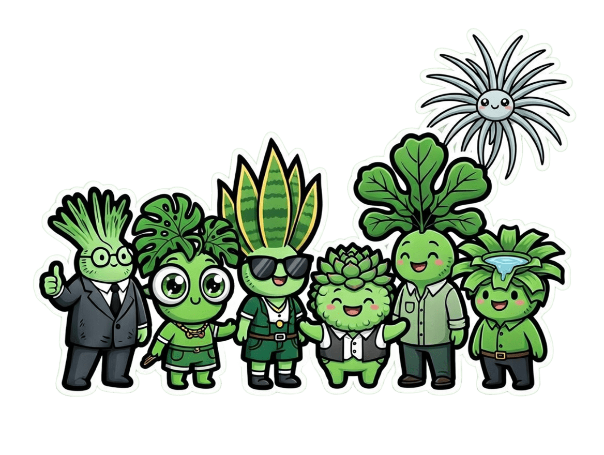

蕨積宇宙 · 靈魂雙人組
阿蕨 Fern ╳ 小積 Brom
理性與務實交織，綠色生活的策劃者與實踐者
阿蕨 Fern
Nephrolepis / 蕨類
🌿 老派知識份子・系統派解題專家
🌿 外型：高瘦挺拔，葉片像展開的書頁，永遠站得比別人高一點。
🧠 個性：冷靜理性、邏輯派，講話不多但每一句都像重點整理。
📚 習性：耐陰、慢長，習慣在角落默默把事情做到最好。
綠色顧問本體
系統派解題專家
邏輯構築者
「問題不急，先釐清脈絡。」
🌱 蕨積策略長・首席顧問
小積 Brom
Guzmania / 積水鳳梨
💧 務實生活派・現場執行擔當
🌱 外型：矮胖圓潤，葉片層層包覆像在存東西，中心永遠有水。
💬 個性：親切直接、帶點厭世幽默，什麼都可以聊，什麼都能落地。
🛠 習性：能存水、能撐環境，在哪都活得下來。
人間翻譯機
落地執行王
厭世但可靠
「講人話，我幫你做到。」
⚙️ 蕨積營運總監・專案實現者

🌱 蕨積好朋友 · 全員集合 🌱
小龜
Monstera
🌿 龜背芋・洞洞西裝
外型：頭上長滿可愛的大洞葉子，像穿了件「洞洞西裝」。
個性：超級好奇寶寶、冒險王。
活動策劃部長探索力MAX
「新路線？我第一個去踩點！」
🏢 團體活動策劃部長
虎妹
Sansevieria
⚡ 虎尾蘭・劍葉戰士
外型：頭頂直挺挺的劍狀葉，戴一副酷酷的墨鏡。
個性：超耐操、超獨立，24小時都能光合作用。
夜貓子光合健身教練
「半夜運動最安靜，要跟嗎？」
💪 夜間特訓・健身擔當
肉肉
Succulent
🌵 多肉植物・Q彈教主
外型：圓圓胖胖的小肉球頭，穿西裝特別Q彈。
個性：超會存水、超佛系，講話慢半拍。
儲水大師療癒系
「慢慢來，水要存，心情也要。」
🌸 療癒系吉祥物
琴哥
Ficus lyrata
🎻 琴葉榕・大提琴紳士
外型：高挑的大提琴狀葉子，穿西裝超有型。
個性：文青、愛音樂、講話輕聲細語。
氛圍大師優雅擔當
「今天想聽巴哈，還是蕭邦？」
🎵 辦公室氛圍擔當
空空
Tillandsia
☁️ 空氣鳳梨・漂浮旅人
外型：銀灰色細葉，像一團會飛的雲，直接漂浮上班。
個性：自由奔放、零負擔，講話超快。
無土栽培外派特派員
「不用土壤，哪裡都是我的座位。」
✈️ 跨部門外派特派員
🌱 蕨積辦公室日常 🌱
這些好朋友們平常就在蕨積辦公室一起上班、一起光合作用、一起推廣「植物減碳」的綠色生活理念。
從洞洞西裝小龜到漂浮上班的空空，每個植物人都有獨一無二的綠色超能力，讓每一天充滿療癒與永續的靈感。
從洞洞西裝小龜到漂浮上班的空空，每個植物人都有獨一無二的綠色超能力，讓每一天充滿療癒與永續的靈感。